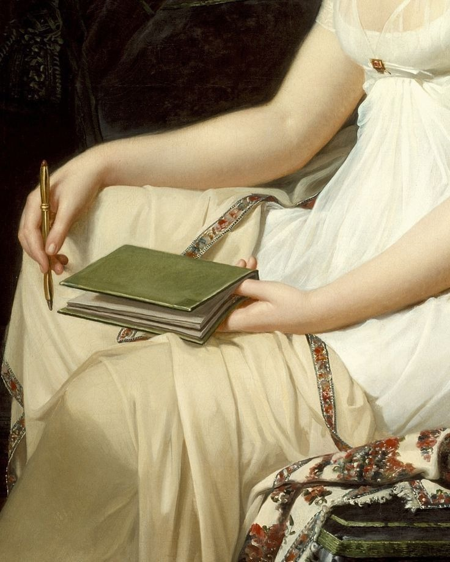

A Place for Thoughts to Live
I have been thinking for some time about keeping a journal. I always wanted somewhere for my thoughts to exist outside of myself and so I decided to create one, which is what you see here.
Thoughts come and go. Some become stories, others questions, and many disappear altogether. I suppose this is an attempt to gather a few of those loose threads, not necessarily to weave them into anything, but simply to keep them from being lost.
There is something peculiar about memory. We carry our experiences with us, yet the very act of remembering changes them. What seems important today may become insignificant tomorrow, while something we barely noticed might return years later with an entirely different meaning. I wonder how much of ourselves we lose simply because we have no record of what we once thought.
I don't expect this journal to follow any particular direction. There will probably be thoughts about writing, literature, philosophy, art, and whatever else happens to occupy my mind. Perhaps there will be memories, observations, unfinished ideas, or things I haven't quite worked out for myself. I don't intend to make every entry into an essay, nor do I expect to arrive at some great conclusion.
And yet, I've chosen to make these thoughts public.
I think there is something fundamental within the desire to share our experiences. Even when we say we are writing primarily for ourselves, there remains the possibility that someone else might recognise something familiar in our words. A thought that seems entirely our own may have occurred to someone centuries before us, or might occur to someone centuries from now. We are separated by circumstances, geography, and time, but perhaps not always by the things we wonder about.
I like the possibility that these pages might become a conversation of sorts, even if I never know who is listening. Perhaps someone will find something useful here, or encounter a question they hadn't considered before. Perhaps I'll return to these entries myself some day, and discover how much I have changed.
For now, I have no particular ambition for this journal beyond allowing it to exist.
If you've found your way here, I would love to hear your thoughts below.
